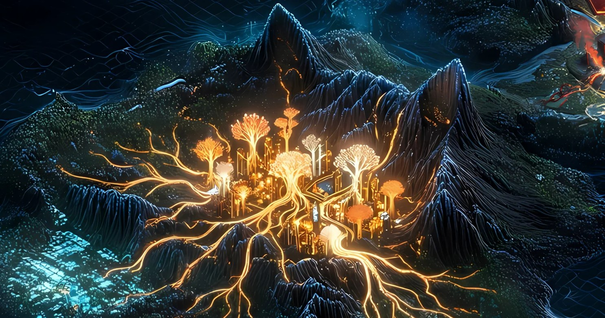

Record // MEME
CAT SEASON PEAKS

Where cats staked their claim against a dog-ruled meme world — Popcat's grin and MEW's 'cat in a dog's world' powering 2024's 'cat season.'
What happened
Solana's cat-coin culture rises here as a deliberate counter to the dog-dominated meme scene. Popcat — drawn from the 2020 'Oatmeal' cat clicker meme — launched as a Solana token in December 2023; in July 2024 it became the first cat-themed meme coin to cross a $1B market cap. In March 2024, MEW launched with its narrative baked into its name — 'cat in a dog's world,' a lone cat surviving among dogs — and the cat-coin rally around these tokens through 2024 became known in crypto circles as 'cat season.'
Why Solana remembers it
This landmark captures meme culture as identity and rivalry: dogs as the incumbent dynasty, cats as the scrappy challengers. It shows how online communities use humor, mascots, and us-vs-them stories to build belonging.
On the map
A cat-shaped mountain in the southwest, peaks lit by a thousand blinking eyes, feline banners raised in defiance of the dog dynasty across the valley.
Evidence
Historical reference only. Documented as meme/internet culture, not investment.